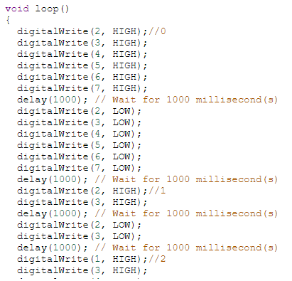
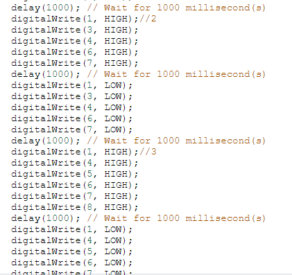

Arduino
In here i will be talking about how i used Arduino to give life to my projexts from using switches to turn LEDs on, to programming a clock.
What is Arduino?
Arduino is an open-source electronics platform based on easy-to-use hardware and software. Arduino boards are able to read inputs - light on a sensor, a finger on a button, or a Twitter message - and turn it into an output - activating a motor, turning on an LED, publishing something online. You can tell your board what to do by sending a set of instructions to the microcontroller on the board. To do so you use the Arduino programming language (based on Wiring), and the Arduino Software (IDE), based on Processing.
Assignments
7 segment countdown timer
Task : Write a program that counts from 0 to 9 continuously.
Simulation :
Explanation :
Before I even touched the arduino board, I needed to know the truth table for the numbers I was going to display, as each segment of the number was assigned to a letter on the 7-segment display. For example, looking at the number 7, the letters that represented the segments "a, b and c needed to be actuated."


I then assigned each segment to the numbers on the arduino board, and set the numbers as outputs.

The last step was to output the respective numbers, with each segment, flashing for a second before turning off and flashing the next number.
 
1 Switch, Many States
Task : Write a program that enables a push button to switch between 5 states for a group of 3 LEDs.
The system can then be turned off when the button is held down for 3 seconds.
Simulation :